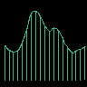
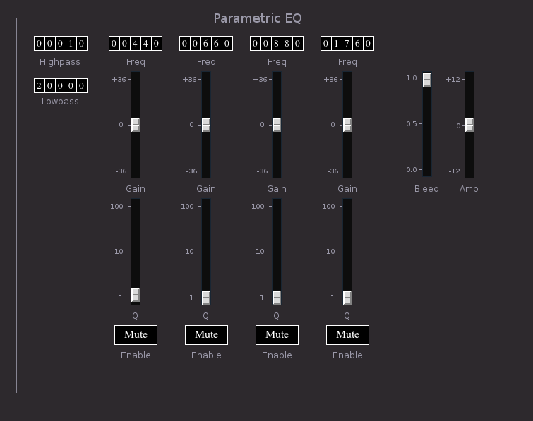

Formant

Formant is a 4 band parametric EQ.

- Highpass tumbler - highpass filter cutoff.
- Lowpass tumbler - lowpass filter cutoff.
For each band:
- Freq tumbler - center frequency
- Gain slider
- Q - filter Q
- Enable button
- Bleed slider, sets how much source signal bleeds through filter.
With bleed at 100% the filter is bypassed.
- Amp - output gain
Buses:
- inbus - audio input
- outbus audio output
Parameters:
- hp - highpass cutoff (10 ... 20k)
- lp - lowpass cutoff (10 ... 20k)
- fx - filter x frequency (10 ... 20k)
- qx - filter x Q (1 ... 100)
- gainx - filter x gain (-36 ... +36)
- enablex - filter x enable (0|1)
- amp - output gain (-12 ... +12)
- bleed - source signal bypass (0 ... 1)